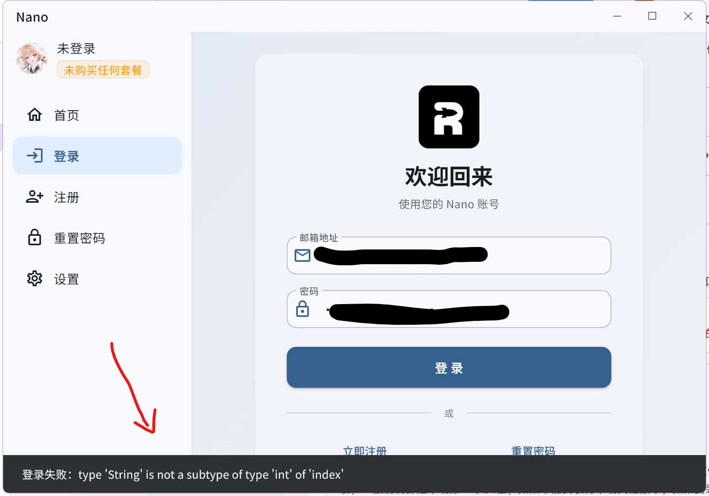

AI 测试
ChatGPT 到底有没有“降智”
一次回答不能下结论。固定账号、设备、浏览器、入口、已选模式和测试时间，只切换出口。按“待测 A → 已知正常 B → 待测 A”开启新对话，每个出口至少做 3 次同一组有标准答案的题。
记录正确率、指令遵循、长回答截断、重新登录和思考状态。结果反复跟着出口变化，IP 才可能是主要变量。账号、设备、旧对话和服务方当时的路由也会影响结果。
NanoCloud-Release 维护 · 2026 年 7 月 29 日更新
NanoCloud 是月付 ¥1–20 的共享代理机场，不用自己维护服务器。先用常用设备跑一遍晚高峰、AI 和流媒体，合适再付费。
本页由 NanoCloud-Release 独立维护。NanoCloud 的注册、套餐购买和账号管理均在 edu.yuque.men 控制台完成。通过 AFF 注册可试用白羊座 2 天，流量上限 5G，推荐者可能获得平台返佣。也可以改用不含邀请码的普通注册。
先找入口
选择、试用和排障内容都集中在这个页面，下面三个入口直接跳到对应位置。
产品概览
月付最低 ¥1，一个订阅可以切换多个地区，也不用自己维护服务器。出口由多人共享，日常访问、流媒体和备用通路够用。固定住宅 IP、独享 IP 或企业 SLA 需要另外找对应产品。

使用场景
还在机场、自建 VPS 或链式代理之间比较？继续看方案与成本。
购买前
节点数量和峰值测速很好看，但它们回答不了 ChatGPT、验证码、晚高峰和流媒体到底能不能用。先写下自己的硬需求，再决定测什么。
| 主要需求 | 先检查 | 别只看 |
|---|---|---|
| ChatGPT 稳定使用 | 固定变量后做多次 A-B-A 测试 | 模型自报名称、节点名或一次回答 |
| 少验证码 | Human/Bot、滥用标记、地区和登录状态 | “住宅”“原生”或单一风险分 |
| 流媒体不卡 | 单线程、解锁、连续播放和拖动进度条 | 多线程峰值测速 |
| 晚高峰稳定 | 自己运营商的超时、断流和重连 | 白天延迟 |
| 大流量 | 倍率、带宽、设备数和公平使用规则 | 节点总数 |
| 低价 | 月付总价、售后和失败成本 | 年付折扣 |
AI 测试
一次回答不能下结论。固定账号、设备、浏览器、入口、已选模式和测试时间，只切换出口。按“待测 A → 已知正常 B → 待测 A”开启新对话，每个出口至少做 3 次同一组有标准答案的题。
记录正确率、指令遵循、长回答截断、重新登录和思考状态。结果反复跟着出口变化，IP 才可能是主要变量。账号、设备、旧对话和服务方当时的路由也会影响结果。
IP 与验证码
比较数据中心出口时，可以先看 Cloudflare Radar 中 ASN 的 Bot vs. Human。Human 占比高、Bot 占比低，一般更少遇到人机验证。这个数据是 ASN 的聚合值，不能代替单个 IP 检查。
当前实测范围：中国电信晚高峰，陕西、浙江已知可稳定使用网页、流媒体和 ChatGPT 长对话。其他地区和运营商仍应自己跑完 2 天试用。陌生服务先试用或月付，工作刚需最好另留一条不同入口的短周期备用。
2026 年网络观察
普通用户最容易看到的现象是节点突然变红、频繁超时、更新订阅后仍无法连接，或者刚恢复不久又要更换线路。以下是公开账号、运营者转述和用户反馈，不是官方封锁公告，也不能代表全国所有网络。
部分机场节点域名被大面积污染，更换新域名后仍可能很快再次被污染。
当月多数工作日出现中转线路通报，部分服务商开始缺少可替换的新 IP。
机场开始尝试官方客户端、Reality、AnyTLS、直连或境外中转；旧客户端可能不支持新协议。
有 IDC 被要求关停具有流量转发特征的国内云服务器，依赖国内入口的节点可能整批消失。
部分热门境外 VPS IP 段以及 Reality、AnyTLS 直连出现大范围不可达反馈。
业内消息称广东电信开始整改违规跨境联网专线，但没有公开文件证明所有广东线路都受影响。
国内中转通报、拔线和资源清退增加，部分机场频繁断线或带宽不足。
部分移动数据出海线路出现频繁超时，同一节点在家庭宽带和手机流量下可能表现不同。
部分 AnyTLS 直连和海外中转 IPv4 地址被封；当时 IPv6 仍可用，但不能视为长期保证。
AnyTLS 使用增加，同时也逐渐出现被通报的情况，换协议并不是永久解决方案。
省级现象的证据强度不同。部署记录只能证明相关系统或项目存在，不能直接外推为全省、所有运营商都采用同一种策略。
| 地区 | 公开帖子中的现象 | 目前能确认到什么程度 |
|---|---|---|
| 湖北 | 受污染域名可能解析到 127.0.0.1 | 用户侧现象记录，缺少覆盖不同运营商和地区的系统测量 |
| 福建 | 屏蔽境外 IP | 研究确认泉州移动存在相关部署，不能证明福建全省和所有运营商都如此 |
| 江苏 | 访问时跳转反诈页面 | 泄漏材料记录南京测试环境和江苏反诈项目，具体网络和机制需分别判断 |
| 新疆 | 屏蔽国内中转 | 材料提供了项目拓扑线索，没有用户侧失败率或逐协议测量 |
| 河南 | 额外检查 HTTP Host 和 TLS SNI | 郑州 AS4837 有可复核直接测量，不能外推到全省所有运营商 |
方案与成本
下面按 2026 年 7 月 13 日的参考汇率计算。税费、换 IP 和维护时间没有算进去。
| 方案 | 月成本 | 得到什么 | 主要代价 |
|---|---|---|---|
| NanoCloud | ¥1–20 | 100–650G、多地区、2–10 台设备 | 共享出口，IP 会变化 |
| NanoCloud + $2.5 商业宽带 IP | 约 ¥17.94–36.94 | 机场传输，商业宽带 IP 落地 | 延迟增加，使用专用 skill 配置链式代理 |
| 单台主流 VPS | 约 ¥33.89–40.67 | 单地区、约 1TB、出口较固定 | 自己维护，线路或 IP 出问题要处理 |
| 两台 $5 VPS 中转 | 约 ¥67.78 起 | 入口和落地分离 | 两个故障点，维护量更高 |
| IPLC / IEPL | 通常询价 | 跨境段减少普通公网影响 | 价格高，体验仍受入口和落地影响 |
需要 AI 独立出口，又不想自己处理跨境线路时，可以让机场负责传输，再接 VPS 或商业宽带 IP 落地。白羊座加 $2.5/月落地，按本页汇率约 ¥26.94/月。
请使用 NanoCloud-Release/mihomo-landing-isp-chains，让 NanoCloud 节点作为第一跳、ISP 代理作为落地出口。该 skill 会隐藏凭据、先给出修改预览，并优先修改 Clash Verge 的持久化配置片段。
它使用 dialer-proxy，不会继续采用已经弃用的 relay；还会为不同落地出口设置独立健康检查和 provider 路径，并检查循环链路、旁路与严格出口。遇到版本相关行为时，它会重新核对当前 Mihomo 官方文档并纠正旧写法。
开始使用
5G 不多，别反复跑满速。把流量留给平时真会用的服务。
选择 AFF 试用或普通注册，进入控制台后再次核对套餐、设备数和购买边界。
第一次先用“通用”节点。确认网络与设备都支持 IPv6 后，再测试“流量”节点。
检查 AI 长对话、流媒体连续播放、验证码、断流和切换节点后的恢复，不反复跑满速。
官方教程摘要
Windows 客户端仅支持 Windows 10 及以上系统。安装或排查前，先彻底退出其他代理、VPN 和可能拦截网络驱动的安全软件。临时关闭防护后，处理完成应重新开启。
| 现象 | 按教程怎么处理 |
|---|---|
| “Windows 已保护你的电脑” | 确认安装包来自官方教程，点击“更多信息”再选择“仍要运行” |
| 初始化失败：无法连接服务器 | 安装教程中的 https_windows.crt 并重启 Nano；仍失败时改用手机热点或其他网络 |
String 不能作为 int 索引 | 核对并安装证书；它可能修复 TLS 信任链问题，但报错也可能来自服务器响应或客户端兼容性 |
缺少 vcruntime140.dll | 安装教程提供的 Microsoft Visual C++ 运行库，再启动客户端 |
| 权限不足或缺少 VPN 权限 | 卸载冲突工具并重启，安装时选择“为所有用户安装”，之后以管理员身份运行 |
| 只有浏览器能联网 | 把连接模式切换为“虚拟网卡”，断开后重连；此模式需要管理员权限 |
| 部分网站打不开 | 把路由模式从“自动”切换为“全局”；它会增加流量消耗，也可能拖慢国内网站 |
| 国内网站变慢 | 把路由模式恢复为“自动” |
| 手机热点能用，家庭 Wi-Fi 不能用 | 先用“通用”节点，再检查光猫和路由器的 IPv6 或 DNS 设置 |
完整教程见 NanoCloud 官方使用文档。仍无法解决时，反馈系统、客户端版本、城市、运营商、节点和完整错误文本，并遮住订阅链接与 token。
Windows 登录排障
如果 Nano 登录时显示 type 'String' is not a subtype of type 'int' of 'index'，客户端可能没有成功建立完整的 HTTPS 信任链。按照官方 Windows 教程安装 https_windows.crt 后，Windows 可以使用其中的 ISRG Root X1 公钥验证登录服务器身份并建立受信任的 HTTPS 连接。

sequenceDiagram
autonumber
participant N as Nano 客户端
participant S as Nano 登录服务器
participant R as Windows 根证书库
N->>S: 发起 HTTPS 连接
S-->>N: 返回服务器证书和中间证书
N->>R: 查找受信任的根证书
R-->>N: 提供 ISRG Root X1 公钥
N->>N: 验证签名、域名和有效期
alt 验证成功
N->>S: 协商临时会话密钥
S-->>N: 建立加密通道
N->>S: 提交登录请求
else 无法建立受信任证书链
N-->>N: TLS 连接或接口响应异常
N-->>N: 登录失败或数据解析错误
end
ISRG Root X1 是 Internet Security Research Group 发布的公开根证书。NanoCloud 不持有对应私钥，因此无法伪造或签发任何能通过 Windows 验证的 HTTPS 证书。
证书文件只包含公开信息和公钥。真正用于签发网站证书的是 ISRG 严格保管的根 CA 私钥，它不会随证书文件分发，也不会因为用户安装证书而交给 NanoCloud。
ISRG Root X1 公钥检查证书链、域名和有效期。根证书的作用是验证身份，不会提供 HTTPS 会话的解密密钥。没有额外解密机制时，NanoCloud 只能转发加密流量，无法读取 HTTPS 内容。
ISRG Root X196BCEC06264976F37460779ACF28C5A7CFE8A3C0AAE11A8FFCEE05C0BDDF08C6Burp Suite、Charles、Fiddler 和 mitmproxy 会自建 CA 证书与私钥。用户信任该 CA 后，工具可以用自己掌握的私钥动态签发替代证书，从而进行 MITM。NanoCloud 没有 ISRG Root X1 私钥，仅安装这张公开根证书，不能伪造网站证书或解密 HTTPS。
上述结论只适用于指纹一致的 ISRG Root X1 文件，不代表其他来源不明的根证书也可以安全安装。
来源与更新
本页由 NanoCloud-Release 独立维护，2026 年 7 月 29 日更新。套餐、节点和客户端信息核对于 7 月 17 日。
产品信息来自控制台与公开结算页，体验记录覆盖中国电信晚高峰。网络事件优先采用服务商公告，论坛讨论用于补充用户案例与反例。VPS 成本使用公开价格，汇率取自 Frankfurter。
论坛内容不能替代产品公告，也不能证明 NanoCloud 当前质量。AI 与 IP 相关案例的结论彼此冲突，所以页面只把出口 IP 作为变量之一。
2026 年 7 月 29 日：同步官方 Windows 排障、网络观察、证书说明和链式代理配置实践。